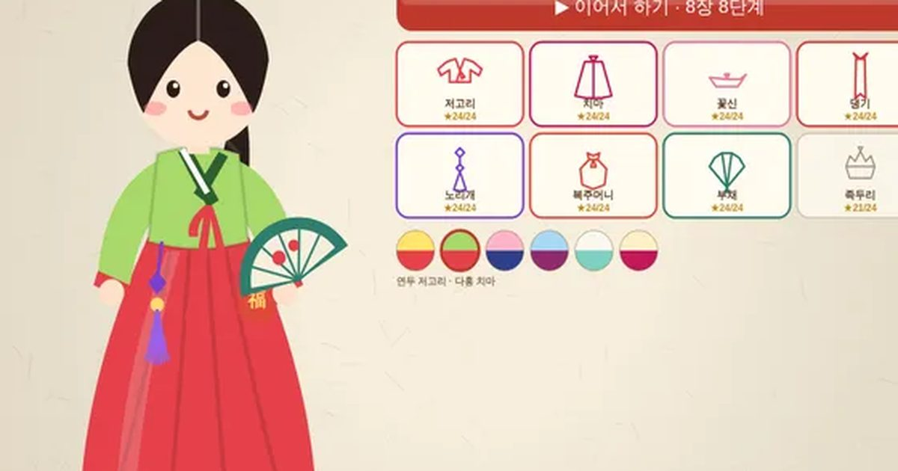

한 획 한복
One-Stroke Hanbok
한붓그리기 · 꾸미기무료설치 없음폰 · PC
▶ 지금 바로 하기로그인 없이 브라우저에서 바로 시작돼요
어떤 게임인가요?
같은 선을 두 번 지나지 않고 모든 선을 한 획으로 이어서! 장마다 마지막 단계에서 저고리·치마·꽃신 같은 한복을 한 획으로 그리면 아씨가 그 옷을 입어요. 별을 모으면 새 색 한복도 열려요.
목표 · 점과 선으로 된 그림을 같은 선을 두 번 지나지 않고 한 획으로 모두 그리세요. 장마다 마지막 단계에서 한복 한 벌을 그리면 아씨가 입어요.
게임 방법
- 아무 점에서나 시작해 선을 따라 끌면 붓으로 그려져요. 손을 잠깐 떼도 마지막 점에서 그대로 이어져요.
- 이미 그린 선은 다시 지나갈 수 없어요. 모든 선을 다 그리면 성공!
- 방금 온 점으로 되돌아가면 한 칸 되돌리기. ↺ 처음부터로 다시 시작할 수 있어요.
- 선이 홀수 개 모인 점이 있으면, 그런 점 중 하나에서 시작해야 끝낼 수 있어요.
- 별: 한 번도 되돌리지 않으면 3개 · 되돌리면 2개 · 힌트를 쓰면 1개.
- 8장 × 8단계. 장의 마지막 단계는 저고리 · 치마 · 꽃신 · 댕기 · 노리개 · 복주머니 · 부채 · 족두리 그리기. 별을 모으면 새 색 한복이 열려요.
등장하는 것들
- 저고리 · 1장 보상
- 치마 · 2장 보상
- 꽃신 · 3장 보상
- 노리개 · 5장 보상
- 족두리 · 8장 보상
- 별 · 새 한복 색 열기
공략 팁
- 선이 3개나 5개 모인 점(홀수)부터 시작해 보세요.
- 다리처럼 한 번 건너면 못 돌아오는 선은 맨 나중에 건너세요.
- 막히면 힌트가 끝낼 수 있는 길을 알려 줘요. 장을 깨면 힌트 +2.
 두더지 팡팡
두더지 팡팡 돌팔매 대결
돌팔매 대결 단짝 줄넘기
단짝 줄넘기 무당벌레 오락실
무당벌레 오락실 성 지키기
성 지키기 통통 배구
통통 배구